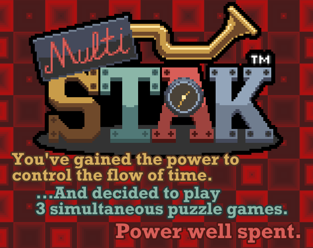
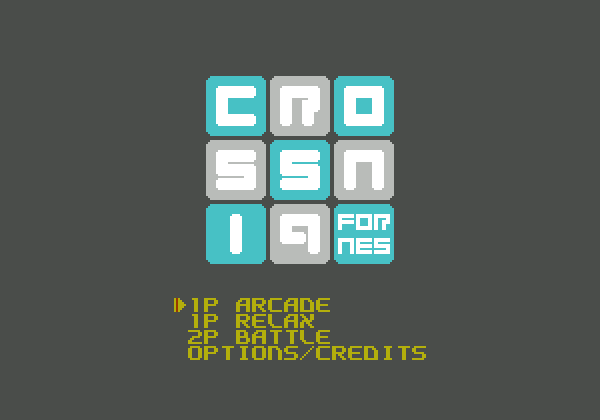
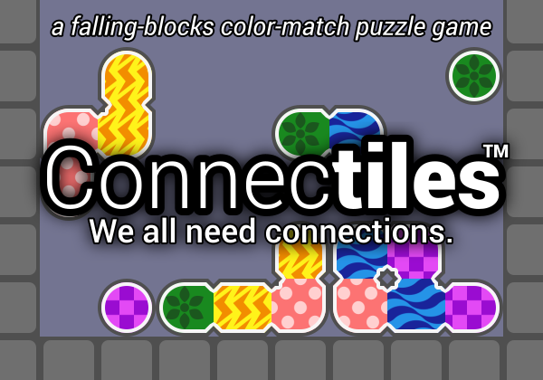
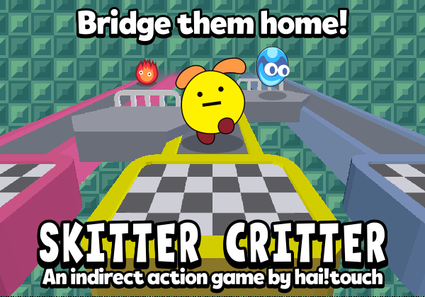
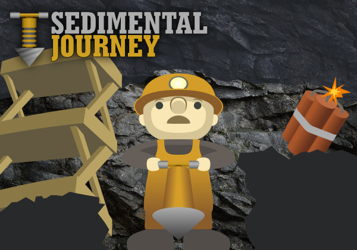
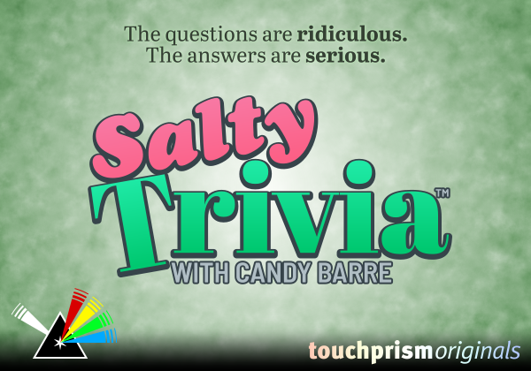

List of games
-

Multistak
Keyboard GamepadYou've gained the ability to control the flow of time. You decided to play 3 puzzle games at once, because with great power comes great tomfoolery.
Game jam entry for Gotm.io Jam #2: Speed. Ranked 8/19.
-

CROSSNIQ (NES-style demake)
Keyboard Gamepad Mouse TouchY2K goes 8-bit. Slide tiles into crosses as fast as you can.
A remake of CROSSNIQ by Max Krieger.
Game jam entry for Retro Jam 2021: Side Effects. Ranked 33/141.
-

Connectiles
Keyboard GamepadArrange the connected colored pieces into groups of the same color to pop them. Get big chain reactions to get a massive point bonus.
Game jam entry for Gotm.io Jam 5: Make It Random. Ranked 5/11.
-

Skitter Critter
Mouse TouchGuide the skittering critters down the lanes and into their desired exit, by making and breaking bridges.
Game jam entry for Gotm.io Jam 6: Leading a Group. Ranked 2/5.
-

Sedimental Journey
Keyboard Gamepad Mouse TouchDig the longest tunnel you can. Rocks fall in connected veins.
Game jam entry for Gotm.io Jam 7: Exploration. Ranked 4/12.
-

Salty Trivia with Candy Barre
Keyboard Gamepad Mouse Touch RemoteA trivia party game with witty questions and a sassy host. With phones as controllers!